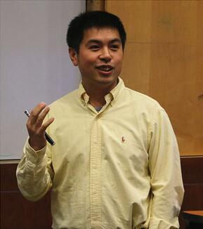

Invited Speakers
Keynote Speakers
| Prof. Zhipeng Cai |
|---|
|  Dr. Zhipeng Cai received his PhD and MS degrees in the Department of Computing Science at University of Alberta, and BS degree from the Department of Computer Science and Engineering at Beijing Institute of Technology. Dr. Cai is currently an Associate Professor in the Department of Computer Science and the College of Business at Georgia State University. Dr. Cai’s research areas focus on Machine learning, Internet of Things, Privacy, and Big data. Dr. Cai is the recipient of an NSF CAREER Award. Dr. Cai's research has been supported by the National Science Foundation, the U.S. Department of State, and other academic and industrial sponsors. Dr. Cai has published more than 100 papers in top journals and conferences including more than 60 IEEE/ACM Transactions papers. His publications have been cited for more than 8700 times. Dr. Cai is the Associate Editor-in-Chief for Elsevier High-Confidence Computing Journal and serves as an editor for several prestigious journals including IEEE Transactions on Knowledge and Data Engineering (TKDE), IEEE Transactions on Vehicular Technology (TVT), IEEE Transactions on Wireless Communications (TWC), IEEE Internet of Things Journal, etc. Dr. Cai is a Steering Committee Co-Chair for the international conferences of WASA, IPCCC and COCOON. He has served as a General/Program Chair for many international conferences such as ICDCS, SocialCom, ISBRA, etc. Dr. Cai has graduated more than 10 PhD students, among whom 7 are tenure-track faculty members in US institutions and 2 are faculty members in Chinese universities. |
| Title |
| Privacy-Preserving Data Publishing through Generative Adversarial Networks |
| Abstract |
| Generative Adversarial Networks (GANs) are widely applied to estimate a density function over an unknown data-generating distribution. A variety of GAN models have been proposed to improve the performance of data publication, data management, knowledge discovery, information fusion, etc. Besides benefit, GAN also bring unique challenges to people, among which privacy issues are extremely urgent yet intractable concerns to be extensively investigated. In this talk, we will introduce three novel GAN models in cybersecurity domain, including Seed Free Graph De-anonymization, Privacy Graph Embedding Data Publication and Generative Adversarial Networks for Auto-Driving Vehicles. The results of extensive real-data experiments validate the superiority of our proposed models. |
| Prof. Houbing Song |
|---|
| Dr. Houbing Song received the Ph.D. degree in electrical engineering from the University of Virginia, Charlottesville, VA, in August 2012. In August 2017, he joined the Department of Electrical Engineering and Computer Science, Embry-Riddle Aeronautical University, Daytona Beach, FL, where he is currently the Director of the Security and Optimization for Networked Globe Laboratory (SONG Lab, www.SONGLab.us) and an Assistant Professor. He has recently served as an Associate Technical Editor for IEEE Communications Magazine, an Associate Editor for IEEE IoTJ, TITS, and J-MASS, and a Guest Editor for many top journals. He is the editor of eight books and the author of more than 100 articles (Number of Google Citations: 15,000+; Good h-index: 64) and the inventor of 2 patents (US & WO). Dr. Song has been on the Top Scientists Ranking for Computer Science prepared by Research.com (https://research.com/u/houbing-song). His research interests include cyber-physical systems/internet of things, cybersecurity and privacy, AI/machine learning/big data analytics, edge computing, unmanned aircraft systems, connected vehicle, smart and connected health, and wireless communications and networking. His research has been sponsored by federal agencies and industry, and featured by popular news media outlets, including IEEE GlobalSpec's Engineering360, Association for Unmanned Vehicle Systems International (AUVSI), Fox News, USA Today, U.S. News & World Report, Forbes, The Washington Times, WFTV, New Atlas, Battle Space and Defense Daily. Dr. Song is a senior member of ACM and an ACM Distinguished Speaker (https://speakers.acm.org/speakers/song_13397). Dr. Song was a recipient of the Best Paper Award from many conferences. |
| Title |
| Networked Systems and Security Research in the Age of AI/Machine Learning |
| Abstract |
| Networked systems have created new opportunities with major societal implications. At the same time, security has emerged as one of the most important socio-technical challenges confronting society. AI/machine learning (ML) techniques are expected to enable networked systems and enhance security. In this talk, I will present my recent research on networked systems and security in the age of AI/ML. First, I will introduce my ML-enabled Counter Unmanned Aircraft System(s) (C-UAS) technology that detects and safely neutralizes rogue drones without destroying them or causing them to crash. This research has been featured by 100+ news media outlets. Next I will present my follow-up research on real-time ML for quickest event (threat/intrusion/vulnerability…) detection. Then I will introduce my research on data-efficient ML, particularly distant domain transfer learning. |
| Prof. Jin Li |
|---|
| Dr. Jin Li is currently a professor and vice dean of School of Computer Science, Guangzhou University. He got his Ph.D degree in information security from Sun Yat-sen University at 2007. His research interests include design of secure protocols in Artificial Intelligence, Cloud Computing (secure cloud storage and outsourcing computation) and cryptographic protocols. He has published more than 100 papers in international conferences and journals, including IEEE INFOCOM, IEEE TIFS, IEEE TPDS, IEEE TOC and ESORICS etc. His work has been cited more than 11000 times at Google Scholar and the H-Index is 40. He is Editor-in-Chief of International Journal of Intelligent Systems. He also serves as Associate editor for several international journals, including IEEE Transactions on Dependable and Secure Computing, Information Sciences. |
| Title |
| How to Ensure Secure Data Sharing with Blockchain in IoT |
| Abstract |
| With the rapid development of IoT techniques, IoT networks constantly generate a large amount of data which contain valuable information for various industrial applications after collecting and analyzing. However, it is almost impossible to enable users to effectively contribute their data without privacy guarantees and incentive mechanisms. Such challenges seriously restrict the data sharing in IoT networks. To this end, based on the blockchain platform, we propose a data incentive mechanism to provide data privacy and fairness measures for users in IoT. Moreover, we give two different constructions of the proposed mechanism and analyze their performances on privacy protection and transaction efficiency. |
| Prof. Guandong Xu |
|---|
| Dr. Guandong Xu is an Australian Computer Society (ACS) Fellow and Professor at School of Computer Science, University of Technology Sydney, specialising in Data Science, Recommender Systems, and Social Computing. He has published 250+ papers in leading journals and conferences. He leads Smart Future Research Centre and Data Science and Machine Intelligence Lab at UTS. He is the Editor-in-Chief of Human-centric Intelligent Systems and assistant Editor-in-Chief of World Wide Web Journal and serving in editorial board or guest editors for several international journals. He has received several Awards from academia and industry, e.g., Top-10 Australian Analytics Leader Award and Australian Computer Society Disruptors Award. |
| Title |
| Causal Inference learning for recommender systems |
| Abstract |
| Causal learning has attracted a lot of research attention with the advance in explainable artificial intelligence. Causal learning contains causal discovery and causal inference two directions, where causal inference is to estimate the causal effects in treatment guided by causal graph structure and has been extended in tasks of counterfactual analysis, disentanglement learning, and debiasing. In this talk, we will introduce our new proposal of incorporating causal learning into recommender systems, and present two recent research on de-biasing confounding in recommendation and causal disentanglement for Intent Learning in Recommendation. Experimental studies on real world datasets have proven the effectiveness of the proposed models. |
Industry Speaker
| Dr Chang Liu |
|---|
| Chang Liu is a senior software engineer at Geoscape Australia. He is a core member of the product team and in charge of developing and delivering geospatial data processing platform on AWS cloud. He received a PhD in computer science in 2015 from University of Technology Sydney and published more than 30 papers in top journals and conferences during his study. He worked as a software engineer after graduation, and he has delivered multiple critical software projects in Australian businesses. |
| Title |
| Big Spatial Data Processing on Cloud - A Geoscape Story |
| Abstract |
| Geospatial data is playing an increasingly vital role in today's world. At Geoscape, it is our goal to produce accurate and fresh geospatial datasets that eventually become the foundation for applications such as address verification, noise modelling, emergency service and urban planning. However, the complexity and volume of the source data always make it challenging to produce and deilver those products. This talk gives an overview on how we built a data processing pipeline on cloud to address those challenges. The platform is able to produces accurate, fresh, customer-ready geospatial data products with minimal human interventions. |
| Mr Tarek Shaalan |
|---|
 Mr Tarek Shaalan is a Software and Cyber Security Engineer, and he has worked in the industry for more than 15 years. Currently, he is based in Sydney and works at Red Piranha. Red Piranha is an Australian organisation that develops an XDR appliance solution (Extended detection and response). He is running Sydney Security Operation center, in addition, working with an innovative team in developing Red Piranha (Crystal Eye SOC) SOAR. He is a graduate master of engineering from Federation University in 2016, and is currently a Ph.D. candidate at ICSL Lab with research topic "Trusted Learning Systems for Applications", where he targets discovering the vulnerabilities in machine learning models from a security perspective. He is also part of the Open Threat Research community (OTR), one of its targets is to empower the infosec community through open-source projects and collaboration. Mr Tarek Shaalan is a Software and Cyber Security Engineer, and he has worked in the industry for more than 15 years. Currently, he is based in Sydney and works at Red Piranha. Red Piranha is an Australian organisation that develops an XDR appliance solution (Extended detection and response). He is running Sydney Security Operation center, in addition, working with an innovative team in developing Red Piranha (Crystal Eye SOC) SOAR. He is a graduate master of engineering from Federation University in 2016, and is currently a Ph.D. candidate at ICSL Lab with research topic "Trusted Learning Systems for Applications", where he targets discovering the vulnerabilities in machine learning models from a security perspective. He is also part of the Open Threat Research community (OTR), one of its targets is to empower the infosec community through open-source projects and collaboration. |
| Title |
| SOAR (Security Orchestration Automation and Response ) Build From The Ground Up |
| Abstract |
| Every day, security operation teams need to handle a large volume of events, alarms, and escalated data from breached environments. It is very important to have a platform that minimizes the time and effort in handling big data and focuses on the most important aspects for faster incident detection and response. SOAR (Security Orchestration Automation and Response) is an example of such a platform. SOAR requires a lot of research and engineering to develop; however, in this talk, I will shed some light on how you can develop a SOAR and I will share some of my experience in this area. |